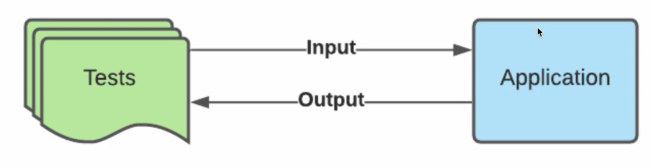

JUnit 5. 1. Введение
Тестирование ПО - это процесс испытания программы, целью которого является определить соответствие между ожидаемым поведением и актуальным с помощью набора тестов.

Т.е. у нас есть какое-то приложение и, для того чтобы взаимодействовать с этим приложением - мы посылаем туда какие-то данные. Наше приложение обрабатывает эти данные и на выходе даёт результат input/output. И цель наших тестов как раз таки проверить этот актуальный результат с ожидаемым. И если они не совпадают друг с другом, следовательно, тесты нашли какой-то дефект в приложении. Поэтому именно такой подход всегда встречаем в тестировании.
Тестирование необходимо не только, для того чтобы проверять новый функционал, но и для проверки работоспособности старого (регрессионное тестирование). Потому что в реальных приложениях чаще всего изменяется существующий функционал и велика вероятность изменения какого-то нового функционала при изменении другого. В этом и опасность изменений в существующем приложении. В этом случае нам помогут тесты.
Выделяют следующие уровни тестирования:
-
Unit testing - тестирование маленького компонента приложения (функции), т.е. этот unit
должен правильно отрабатывать в изоляции от других компонентов.

Т.е. этот юнит должен правильно отрабатывать в изоляции от других компонентов. Берём ту же самую модель, набор тестов, но в данном случае тестируем лишь одну какую-ту функцию в одном каком-то java-классе. Так же даём какой-то набор входных параметров (input) и функция возвращает какой-то результат (Actual output) и сверяем с ожидаемым результатом. -
Integration testing - интеграционное тестирование, тестирование несколько компонентов приложения
(функций), т.е. как маленькие units работают вместе как один большой unit.

Т.е. как маленькие юниты работают как один большой unit. Берём уже несколько таких функций, которые взаимодействуют друг с другом как одно целое и также в случае наших тестов - мы отправляем на вход большого юнита какие-то параметры и на выходе получаем какой-то ожидаемый результат. Мы опять же проверяем output актуальный с ожидаемым.
В java это будет выглядеть как набор классов и функций, которые просто вызывают друг друга. -
Acceptance testing - тестирование всего приложения в целом, т.е. как оно работает со стороны
пользователя (функциональное тестирование).

В этом случае нашим "черным ящиком" выступает всё приложение. Тестирование по сути эмулирует работу пользователей, которые работают с приложением. Они опять же посылают какие-то входные параметры и приложение отвечают им в виде output и сверяем его с ожидаемым поведением и если он не совпал, то тестирование выявляет какие-то дефекты приложения.

Если посмотрим на эту диаграмму, то увидим, что Unit-тестов должно быть больше всего в нашем приложении потому что они простые и проверяют очень простой функционал.
Интеграционных тестов должно быть меньше потому что они уже проверяют взаимодействие отдельных юнитов в нашем приложении и как они взаимодействуют друг с другом (например когда на вход одного сервиса передаём параметры, а он в свою очередь вызывает другие сервисы для получения выходного значения из своей функции).
В случае acceptance тестов их должно быть ещё меньше потому что они самые сложные и проверяют всё приложение, весь функционал от начала до конца.
Естественно, чем проще тест тем быстрее он запускается и быстрее отрабатывает. Чем сложнее тест, тем работает медленнее. Поэтому в нашем случае acceptance тесты медленее всего, а юнит-тесты быстрее всех. Чем раньше найдём какой-то дефект с помощью тестов тем дешевле обойдётся компании исправить эту проблему.
JUnit 5 - это один из самых распространенных Java-фреймворков, который предназначен для написания в основном Unit и Integration тестов. Для написания Acceptance тестов обычно используются другие тест фреймворки, например: JBehave, TestNG.
JUnit 5 разбит на несколько основных под-проектов. Эти подпроекты в свою очередь разбиты на отдельные модули и подключаем только то, что нам необходимо:
- JUnit Platform - этот подпроект необходим для того чтобы была возможность запускать тесты на JVM. Более того, в нем есть функционал для запуска JUnit тестов на любых фреймворках (даже из консоли) и интеграция с такими build-инструментами как maven и gradle.
- JUnit Jupiter - этот подпроект предоставляет набор классов, которые разработчики используют для написания тестов. Т.е. различные API.
- JUnit Vintage - создан специально для интеграции с предыдущими версиями JUnit в случае если захотим использовать в своем приложении. Т.е. что-то вроде обратной совместимости с предыдущей версией JUnit 5.
Обязательным требованием для JUnit 5 является наличие Java выше 8й версии.
Наличие тестов в программе невероятно важный аспект в любом современном приложении на Java.